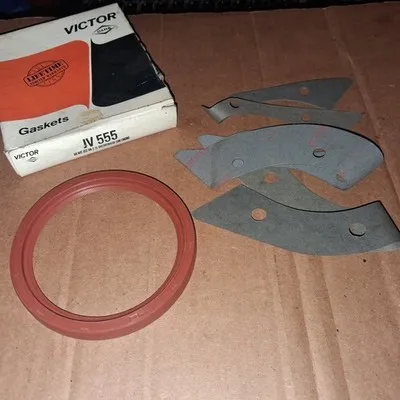
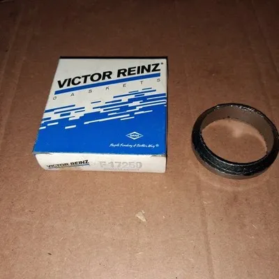
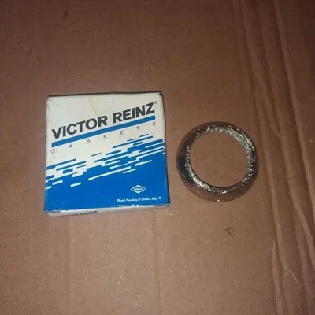
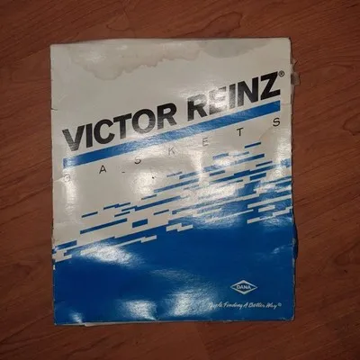
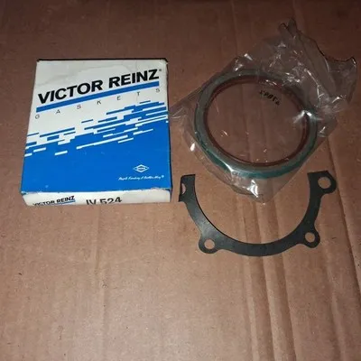
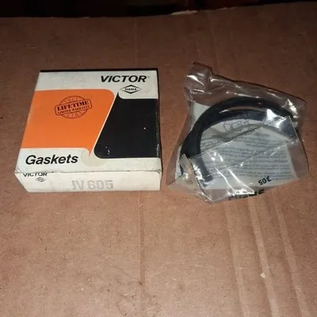

Exhaust Gasket
Victor F7210 Exhaust Pipe Ring NOS 82-92 Camaro
F7210
Fits 1986-1988 Buick Century · 1982-1992 Chevrolet Camaro (319 listed)
$9.99
View details21 parts from Victor Reinz, mostly engine parts and exhaust parts. Each listing shows the part number, condition and photos. Check fitment on the part page before you order.
21 parts
Online checkout through Square. Ships from Carbondale, PA, or pick up by confirmed appointment only. Fitment question? Message us.
F7210
Fits 1986-1988 Buick Century · 1982-1992 Chevrolet Camaro (319 listed)
$9.99
View details
JV544
Fits 1987-1989 Buick Century · 1987-1989 Chevrolet Beretta (71 listed)
$19.99
View details
JV554
Fits 1990-1992 Cadillac Brougham · 1986-1996 Chevrolet Camaro (250 listed)
$21.99
View details
JV555
Fits 1986-2007 Ford Taurus · 1985-1996 Ford Escort (428 listed)
$19.99
View details
JV730R
Fits 1964-1970 Ford Fairlane · 1964-1970 Ford Falcon (173 listed)
$29.99
View details
F17250
Fits 1971 Ford Custom · 1964-1973 Ford Mustang (78 listed)
$9.99
View details
F7139
Fits 1990 Chevrolet C60 · 1990 Chevrolet C70 (5 listed)
$14.99
View details
F7207
Fits 1977-1985 Buick Electra · 1977-1982 Buick Regal (280 listed)
$14.99
View details
F7209
Fits 2012-2015 Honda Civic · 2013-2015 Acura ILX (48 listed)
$14.99
View details
F7271
Fits 1982-1995 Chevrolet S10 · 1983-1989 Chevrolet S10 Blazer (253 listed)
$14.99
View details
F7275
Fits 1984-1986 Chrysler Laser · 1984-1988 Chrysler LeBaron (187 listed)
$14.99
View details
F7395
Fits 2008-2012 Ford Taurus (704 listed)
$15.99
View details
F7398
Fits 1983-1992 Buick Century · 1985-1990 Chevrolet Astro (309 listed)
$10.99
View details
JV1032
Fits 1986-1994 Ford Aerostar · 1990-1992 Ford Probe (208 listed)
$19.99
View details
JV524
Fits 1982-1994 Chrysler LeBaron · 1981-1989 Dodge Aries (358 listed)
$19.99
View details
JV603
Fits 1975-1986 Chevrolet C10 · 1967-1985 Chevrolet Camaro (802 listed)
$16.99
View details
JV605
Fits 1971-1990 Chrysler (2 listed)
$16.99
View details
JV845
Fits 1977-1986 Buick LeSabre · 1964-1971 Oldsmobile Cutlass (1024 listed)
$21.99
View details
JV856
Fits 1966-1985 Ford Bronco · 1975-1985 Ford F-150 (1641 listed)
$21.99
View details
JV969
Fits 1982-1986 Buick Skyhawk · 1982-1986 Chevrolet Cavalier (307 listed)
$16.99
View details
JV980
Fits 1982-1988 Chrysler LeBaron · 1981-1988 Dodge Aries (335 listed)
$14.99
View details